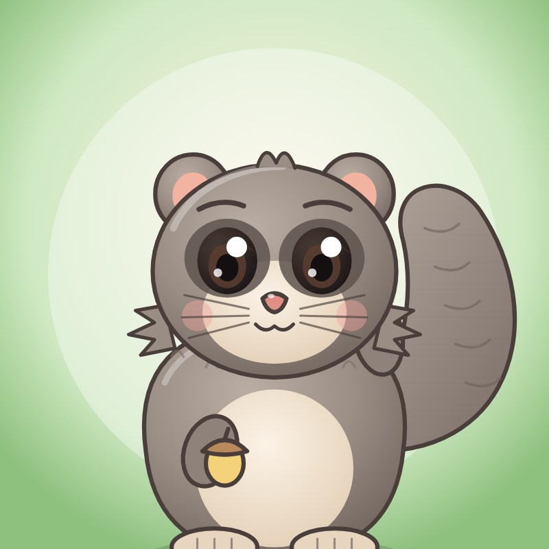

Pufkova Šuma — animirane priče i pjesmice za mališane na hrvatskom jeziku.
Pufko i prijatelji Ježić, Zeka i Ptičica uče djecu boje, brojeve, osjećaje i lijepo ponašanje.
Pufkova Šuma is a Croatian animated channel for young children (stories and songs).
Gledajte nas / Watch us: YouTube, TikTok, Instagram i Facebook — @pufkova_suma / Pufkova Šuma
Kontakt / Contact: pufkovasuma@gmail.com